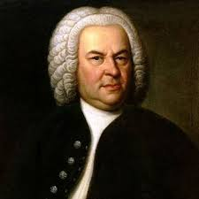
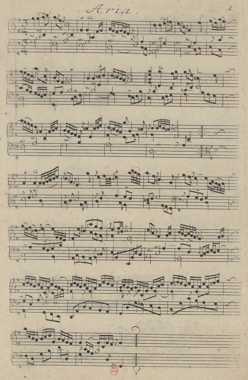
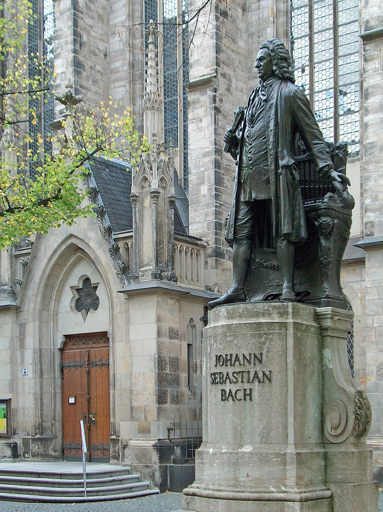

The most exceptional member of a wide-spread German family of musicians active from the late 16th through the early 19th centuries, Johann Sebastian Bach is a pivotal figure in the history of music. He drew together the achievements of his predecessors and led on to new musical perspectives that influenced later generations. His genius combined outstanding performing musicianship with supreme creative powers in which original imagination, technical mastery, and intellectual control were perfectly balanced. Many of his works—such as the Well-Tempered Clavier and other keyboard works, most of his organ music, the Brandenburg Concertos, the unaccompanied solos for violin and cello, the cantatas, Passions, and oratorios, the Art of Fugue, and the Mass in B minor - became exemplary samples of their kind and have preserved their influence and legacy through the present day.

Johann Sebastian was born in Eisenach on March 21, 1685, as the youngest child to Johann Ambrosius Bach and his wife Maria Elisabeth, née Lämmerhirt. His father, director of the town music company and violinist at the ducal court, was his first teacher. A Latin school student from 1692, he lost both mother and father (in 1694 and 1695) and continued his education under the tutelage of his oldest brother Johann Christoph, a former student of Johann Pachelbel’s and organist in Ohrdruf. In early 1700, having received a choral stipend for St. Michael’s School in Lüneburg, Bach left his Thuringian home country for North Germany, where he continued to study under the renowned local organist Georg Böhm, but also encountered Johann Adam Reincken in nearby Hamburg. Early autograph music manuscripts from Ohrdruf and Lüneburg testify to the unusually demanding repertoire the 13- to 15-year-old keyboard student could master. After graduating from St. Michael’s in 1702, Bach served for half a year as assistant to the distinguished Weimar court organist Johann Effler. Yet already by July 1703, he had been appointed as organist of St. Boniface’s Church in Arnstadt, whose brand-new organ helped him refine his keyboard skills, while its Werckmeister-style tuning let him pursue harmonic experiments. During the winter of 1704–05, he took (and overstayed) a leave of absence to study with Dieterich Buxtehude in Lübeck. In 1707, he married his distant cousin Maria Barbara Bach and accepted an organist post in the Free Imperial City of Mühlhausen but resigned from it after only eleven months to succeed his mentor Effler at the Weimar court. The early years in Arnstadt and Mühlhausen established his reputation as a keyboard virtuoso, but also provided opportunities for occasionally composing vocal works, thereby establishing the foundation for a distinguished career as performer, composer, teacher, and organ consultant.
For the organist and chamber musician at the ducal residence in Weimar, keyboard music remained the central focus. The bulk of Bach’s organ works originated here, but so did the sets of Toccatas and English Suites for harpsichord. Bach’s encounter with the new Italian concerto and his keyboard transcriptions of related orchestral works by Vivaldi and other Italians contributed significantly to the formation of his personal style. An offer to succeed Handel’s teacher F. W. Zachow in Halle led to Bach’s promotion to concertmaster in 1714. This expanded his Weimar responsibilities to include the regular production of church cantatas, to which he had previously turned only on special occasions. In 1717 Bach was invited by the Dresden court to a competitive encounter with the French virtuoso Louis Marchand, who, however, bowed out of the event. In December of the same year, he took office as capellmeister and director of chamber music at the princely court of Anhalt-Cöthen. There his creativity was inspired by an outstanding ensemble of instrumentalists, all members of the former Prussian court capelle in Berlin that was dissolved in 1714. In 1720, while absent on a trip with Prince Leopold, Bach suffered the tragic loss of his wife. In late 1721 he married Anna Magdalena Wilke, a singer of the Cöthen court capelle and offspring of a family of musicians. At the Cöthen court, instrumental music played a prevailing role vis-a-vis vocal music, but most of the repertoire in both categories must be considered lost. Significant exceptions are the two books of unaccompanied solo works (six each for violin and cello), the Brandenburg Concertos, Book I of the Well-Tempered Clavier, the Inventions and Sinfonias, and the French Suites. The vacancy in 1722 of the time-honored St. Thomas cantorate in Leipzig after Johann Kuhnau’s death suggested new opportunities, including better educational choices for his children. Elected to the position in 1723, Bach left Cöthen on good terms and continued as titular capellmeister—a post that ended with Prince Leopold’s death in 1729. During the early years in Leipzig, Bach’s energies focused on sacred music. By 1728–29 he had composed a substantial body of cantatas to serve him in later years, but the repertoire also included oratorio-style works like the Magnificat and the St. John and St. Matthew Passions. Although no longer serving as organist, he continued as recitalist and organ consultant. In 1729 he also accepted the directorship of the Collegium Musicum, a bourgeois music organization with an ambitious concert schedule throughout the year. He wrote secular cantatas, orchestral suites, violin, keyboard, and other concertos, as well as chamber works to be featured there at the expense of further investments in church music. But exceptions are some festive larger-scale works such as a Kyrie and Gloria (later to become part of the Mass in B minor), four shorter Kyrie-Gloria Masses, and the Christmas, Easter and Ascension Oratorios. He also wrote Book II of the Well-Tempered Clavier and published under the heading Clavier-Übung a four-part series designed to represent the state of the art in keyboard music, which included the Six Partitas, the Italian Concerto and French Overture, a collection of organ works, and the Goldberg Variations.

Chopin's art reached a new plateau in the late 1830s as a result of his involvement with the writer Aurore Dudevant, six years his senior, who in 1832 had taken to calling herself George Sand. Some of his greatest works emerged as a result of the emotional contentment he felt in the early days of their nine-year liaison. They spent the winter of 1838-39 together on Majorca, living in adjacent rooms in an abandoned Carthusian monastery. Chopin endured his first major bout of tuberculosis, but though seriously ill managed to complete the 24 Preludes, Op. 28 (1838-39). During the 1840s, in spite of emotional ups and downs and recurrent illness, he produced a remarkable body of compositions that included the Ballades in A-flat, Op. 47, and F minor, Op. 52, the Mazurkas of Opp. 50, 56, 59, 63 and 67, the A-flat major Polonaise, Op. 53, the Nocturnes of Opp. 48, 55 and 62, and the Sonata in B minor, Op. 58 (1844). The best of these works — the B minor Sonata, the Op. 55 Nocturnes and the Op. 56 Mazurkas — are characterized by remarkable refinement and complexity, along with a newly rich sense of ambivalence. The opening movement of the sonata finds Chopin at the summit of inspiration, weaving turbulence and romantic yearning into a beautifully seamless expression. The situation with George Sand began to deteriorate in 1843, and in 1847 the break came. By then, Chopin was gravely ill; seeking escape, he left Paris in April 1848 for an extended sojourn in England and Scotland, from which he returned, exhausted, in November. He composed virtually nothing in the final year of his life

The title of Royal Polish and Electoral Saxon Court Compositeur, awarded in 1736, increased Bach’s independence from his Leipzig superiors. He delegated some responsibilities as cantor to capable assistants, resigned in 1741 from the Collegium directorship, and focused primarily on work of personal interest. At the center stood two long-term projects: the Art of Fugue (left unfinished) and the Mass in B minor (concluded in 1748–49), both representing his instrumental and vocal legacy in terms of historically relevant musical genres that never lost their impact. Bach’s health remained quite good, except for vision problems, until the unsuccessful eye operation of March 1750 by the English oculist John Taylor (who also operated on Handel) that led to his death on July 28, 1750.
There is no shortage of recorded Bach in both audio and video formats. The complete works are available in both traditional and historically informed performances, on modern or period instruments by internationally acclaimed performers. YouTube and other online resources provide easy access to any vocal and instrumental title. Moreover, the CMS archive is rich in contents with two mixed chamber music programs “Back to Bach” (2022, 2024), various cantatas, the Brandenburg Concertos (No. 1, No. 2, No. 3, No. 4, No. 5, and No. 6), the sonatas for keyboard and violin and viola da gamba, the unaccompanied violin (Partita No. 3) and cello (Suite No. 3, Suite No. 6) works, as well as numerous keyboard pieces (English Suite No. 2, French Suite No. 3, Partita No. 6, and Chromatic Fantasy and Fugue).